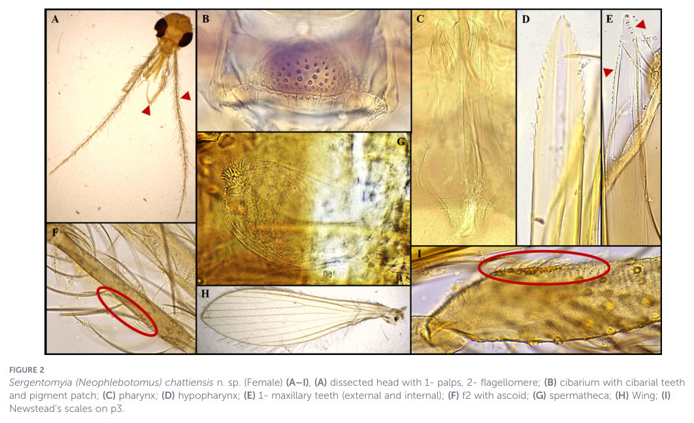
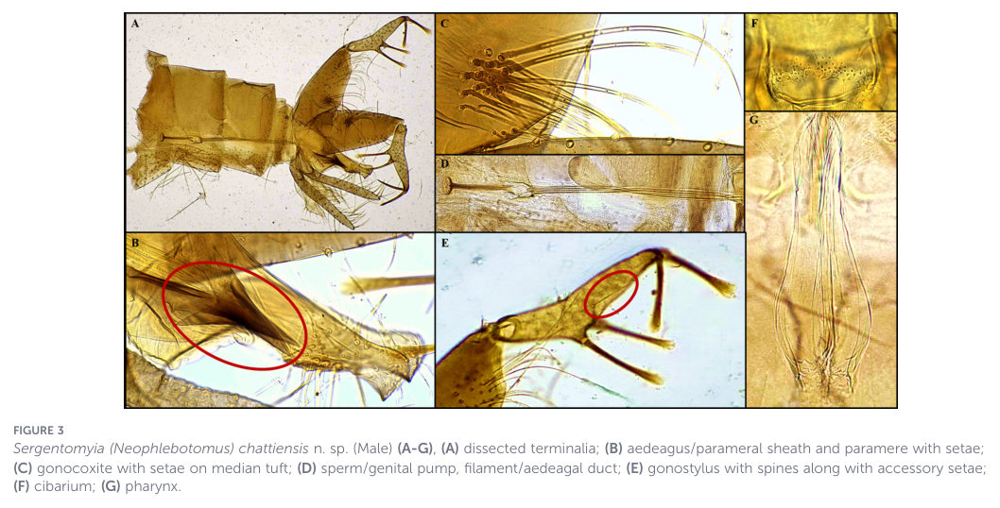

Species › Sergentomyia › Neophlebotomus
Sergentomyia chattiensis
| Classification | Genus Sergentomyia, subgenus Neophlebotomus |
|---|---|
| Status | valid |
| Distribution | India: Himachal Pradesh. Type locality: cattle sheds and adjoining rooms, Chatti village, tehsil Nirmand, panchayat Tunan, Kullu district, 31.4593 N 77.6679 E, 1,097 m; survey of August 2022 (Shah et al. 2026). |
| Diagnostic notes | ♀: labrum 337 µm; hypopharynx with 17-19 teeth on each side; maxilla with 5-6 internal and 23-26 external teeth; palpal formula 5,1,2,3,4; ascoid on f2 53 µm; cibarium with 15-18 pointed hind teeth, more than eight rows of fore teeth/denticles (about eight rows in the diagnosis), dark dome-shaped pigment patch without a defined anterior projection; pharynx 215 x 83 µm, lightly armed with minute spicules; wing 2087 µm; spermatheca oblong, thin-walled, 74 x 34 µm, faint internal striations, knob in a shallow pit; ducts indistinct. ♂: labrum 259 µm; cibarium with 14-17 rudimentary hind teeth and about eight rows of weak fore teeth; gonostyle 209 µm with four spines (two apical, two terminal; interspinal distance 117 µm) and an accessory spine 30 µm proximal to the terminal spine; gonocoxite 324 µm with a median tuft of only 11-13 setae (given as the distinguishing male character); paramere beak-shaped, 180 µm, 25-30 setae; parameral sheath tapering to a sharp arrow-like point; sperm pump 128 µm, aedeagal ducts 391 µm, striated. Compared species (values as given by Shah et al. 2026): S. zeylanica (♀ 14-15 teeth, three rows of fore teeth, dome-shaped pigment patch, labrum about 310 µm, maxilla 3 lateral and about 30 ventral teeth; ♂ 8-10 irregular teeth, thick aedeagus, gonocoxite with clusters of outer hairs) and S. arboris (♀ about eight rows of fore teeth, 17-20 teeth, no clearly defined anterior process on the pigment patch, labrum about 320 µm, maxilla 8 lateral and about 58 ventral teeth; ♂ about ten fore teeth and about 20 small rounded teeth, aedeagus triangular with a blunt tip). COI distance 12.3% to S. zeylanica, its closest congener. Not in any printed key: in Lewis 1978 the ♀ reaches couplet 113 (eight rows of fore teeth); labrum/wing in the holotype is about 0.16 (337/2087 µm, calculated), between 113a (0.18-0.21) and 113b (0.13-0.15). |
| Sources | Shah et al. 2026 |
⚠ Conflicting characters
| Character | Source A | Source B | Type | Comment |
|---|---|---|---|---|
| Subgenus | Shah et al. 2025: Described in subgenus Neophlebotomus (also S. chattiensis, Shah et al. 2026) | Depaquit et al. 2019: Validity of Neophlebotomus doubtful; newly described related species left ungrouped | different interpretation | taxa.csv follows the describing authors (Neophlebotomus). See C19. |
How it keys out
This taxon is not reached by any key in this collection (described or recognised later). Use the diagnostic notes and the original description.
The chain of characters leading to this taxon in each key (a ready-made diagnosis).
Figures



